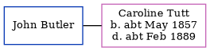

John Joseph Butler
[ Home ] | [ Calendar ] | [ Surnames Index ] | [ Errors ] | [ Family History ]John Butler, the husband of Caroline Bromley Tutt (the great-great-aunt of Nigel Horne), and married Caroline in Hammersmith, London, England on 14 Oct 18781 (Oct/Nov/Dec).
Citations
- England & Wales, FreeBMD Marriage Index: 1837-1915 Online publication - Provo, UT, USA: The Generations Network, Inc., 2006.Original data - General Register Office. England and Wales Civil Registration Indexes. London, England: General Register Office. © Crown copyright. Published by permission of the Cont
Media
Caroline Bromley Tutt - John Joseph Butler - Marriage Certificate

England & Wales marriages 1837-2008 Transcription - BMD-M-1878-4-AZ-000312-180
Family Tree
Map
Generated by ged2site. Last updated on Jul 3, 2024